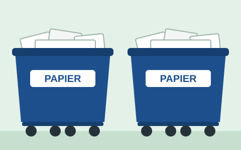

Das Problem
Unsere Schule versteht sich als digitale Schule. Im Alltag wird trotzdem viel mit Papier gearbeitet. Hier zeigen wir, wo der Widerspruch liegt und was Schülerinnen, Schüler und Lehrkräfte dazu sagen.
Der Widerspruch
Der Anspruch
So beschreibt sich unsere Schule auf ihrer Website:
„Die Gesamtschule Wasseramselweg versteht sich als eine moderne Bildungsinstitution, die den digitalen Wandel als Teil unserer Lebenswirklichkeit begreift […]. Für dieses Vorhaben ist die Schule digital umfassend ausgestattet.“
- Jede Klasse hat ein Smartboard.
- Ab Klasse 5 arbeiten alle mit Tablets.
- In allen Fächern sollen Apps das Lernen unterstützen.
Quelle: Gesamtschule Wasseramselweg, „Digitales & Kulturelles Lernen“
Der Alltag
- Arbeitsblätter werden weiterhin ausgedruckt und verteilt.
- Arbeitshefte werden gekauft, aber oft kaum genutzt.
- Klassenarbeiten und Prüfungen finden auf Papier statt.
- Die Papiercontainer sind fast immer voll.
Was sagen die Schülerinnen und Schüler?
Wir haben gefragt: „Wie oft benutzt ihr das iPad für Arbeiten im Unterricht im Gegensatz zu Papier?“
- Fast immer iPad, kein Papier3 %
- iPad oft, eher weniger Papier26 %
- iPad genauso oft wie Papier2 %
- Mehr Papier, weniger iPad67 %
- Fast gar nicht iPad, fast immer Papier2 %
Ergebnis: Gut zwei Drittel der Befragten (69 %) arbeiten im Unterricht überwiegend mit Papier. Nur 29 % nutzen überwiegend das iPad. Insgesamt haben 128 Schülerinnen und Schüler geantwortet.
Genaue Stimmenzahlen als Tabelle anzeigen
| Antwort | Stimmen | Anteil |
|---|---|---|
| Fast immer iPad, kein Papier | 4 | 3,1 % |
| iPad oft, eher weniger Papier | 33 | 25,8 % |
| iPad genauso oft wie Papier | 3 | 2,3 % |
| Mehr Papier, weniger iPad | 86 | 67,2 % |
| Fast gar nicht iPad, fast immer Papier | 2 | 1,6 % |
| Gesamt | 128 | 100 % |
Eigene Umfrage unter Schülerinnen und Schülern der Klassen 6–10, durchgeführt innerhalb einer Schulstunde am 05.11.2026. Die Umfrage ist nicht repräsentativ für die ganze Schule. Prozentwerte sind gerundet.
Woher kommt der Papiermüll?
Laut unserem Hausmeister stehen an der Schule zwei große Papiercontainer. Sie werden alle 14 Tage geleert und sind dann fast immer voll, hauptsächlich mit Papier.
Hochrechnung: Container dieser Bauart (vier Räder) fassen meist 1.100 Liter. Bei 39 Schulwochen sind das knapp 20 Leerungen von je bis zu 2.200 Litern, also rund 43.000 Liter Papiermüll pro Schuljahr. Das ist eine grobe Schätzung, die Container wurden nicht gemessen.
Mögliche Gründe, warum trotz iPads so viel Papier anfällt:
- Gewohnheit: Arbeitsblätter auszudrucken ist für viele der gewohnte Weg.
- Übung: Aufgaben digital zu verteilen und einzusammeln, ist für manche noch ungewohnt.
- Prüfungen: Klassenarbeiten und Prüfungen laufen bisher auf Papier.
- Arbeitshefte: Sie werden für jedes Kind gekauft, aber oft nur teilweise benutzt.
- Unnötige Ausdrucke: Reine Lesetexte werden gedruckt, obwohl man sie auch auf dem iPad lesen kann.

Was sagen Lehrkräfte?
Wir haben drei Lehrkräfte nach ihrer Meinung gefragt und ihre Antworten in Stichpunkten notiert. Namen nennen wir nicht.
Lehrkraft A
- Findet einen Ausgleich zwischen iPad und Papier sinnvoll.
- Setzt Papier nur dann ein, wenn es wirklich nötig ist.
- Nutzt Papier inzwischen fast nur noch für Klassenarbeiten.
Lehrkraft B
- Versucht selbst, im Unterricht möglichst das iPad zu benutzen.
- Schätzt, dass an unserer Schule insgesamt zu etwa 50 % mit dem iPad gearbeitet wird.
Lehrkraft C
- Findet, dass sowohl digitale Medien als auch Papier benutzt werden.
- Findet, dass es schon besser ist als früher.
- Sieht Verbesserungsmöglichkeiten bei Klassenarbeiten, Prüfungen und Projekttagen.